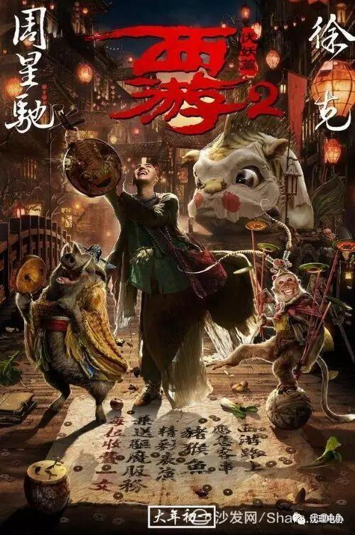
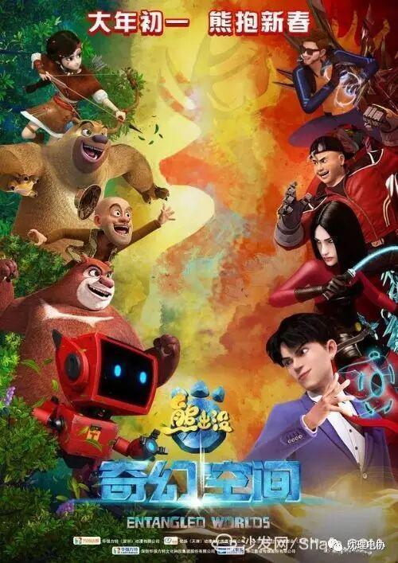
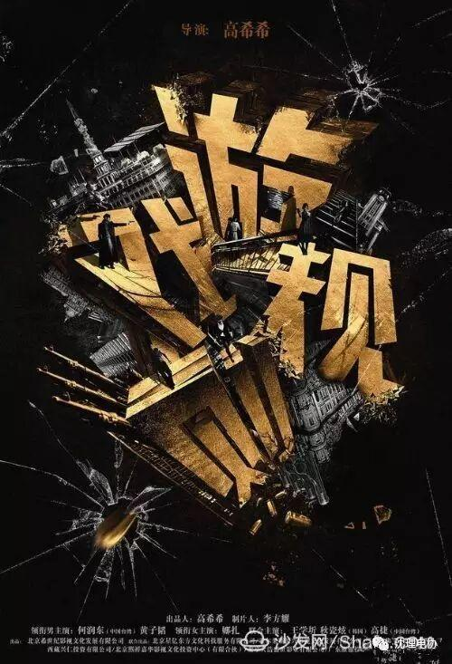

寒假档可以约的电影
速之距离一年一度最火爆的档期——春节档，还有不到两个月的时间，目前已有11部影片宣布定档春节上映：从周星驰、徐克联手打造的《西游伏妖篇》，到成龙主演的动作喜剧片《功夫瑜伽》，从王宝强自导自演的新作《大闹天竺》，舒淇、王千源领衔主演的《健忘村》，再到葛优、谢霆锋联手烹制的“年夜饭”《决战食神》，还有一众中小成本的影片，这个史上最拥挤的春节档，已经让业内人士闻到了浓浓的火药味。今年春节档将呈现群雄争霸、惨烈厮杀的局面，我们已经搬好小板凳，坐等新一波票房纪录的诞生。
最近几年星爷可以算是贺岁档的大赢家啊，从2013年的《西游降魔篇》狂揽12.46亿的票房，称霸当年春节，从此开辟内地春节档的全新格局，16年周星驰的《美人鱼》又斩获33亿票房。此番《西游伏妖篇》作为周星驰西游故事的正式续作，同样让人期待其在2017春节档的表现。
现在小编就来为大家盘点一下堪称史上最拥挤的2017年春节档都与哪些电影
一：西游伏魔篇
主演：吴亦凡，林更新，姚晨，林允

剧情看点：电影《西游伏妖篇》作为2013年周星驰导演电影《西游·降魔篇》的后继故事，讲述了唐三藏在上集感化了杀死段小姐的齐天大圣，并收其为徒后，与孙悟空、猪八戒及沙僧，师徒一行四人踏上西天取经之旅。路途凶险，除魔伏妖，师徒四人也在取经的过程中有了各自的成长与改变。
二：功夫瑜伽
主演：成龙，张艺兴，李治廷，曾志伟
剧情看点：成龙在《功夫瑜伽》里是风度翩翩的大学教授，带领李治廷和张艺兴游遍全球，冒险寻宝。除了功夫喜剧和探险搞怪，异国风情也是这部电影的看点之一，在印度巷口变戏法，和印度贵族斗舞;在迪拜街头和土豪飙车，不差钱;在冰岛探冰穴，潜冰洞，滑冰梯，感受绝美仙境。不出意外的话，《功夫瑜伽》又将是一部标准的成龙动作喜剧电影，多次进军春节及贺岁档的成龙大哥，票房号召力一直十分稳定。
三：大闹天竺
主演：王宝强，柳岩，岳云鹏，白客
剧情看点：王宝强首次自导自演的电影《大闹天竺》兼具了“喜剧”和“功夫”的元素，在电影中，王宝强饰演的“武空”有一身好功夫、重情重义，和白客饰演的纨绔富二代“唐森”误打误撞地踏上天竺“取真经”。岳云鹏饰演的“朱天鹏”是一个自恋臭美却又忠诚的小跟班，而柳岩饰演的“吴静”美艳性感、刁蛮任性，深藏秘密的她巧合之中加入西征之旅。而且因婚变事件宝强赚得全国人民的不少同情分，或许有助这部影片成为年度票房黑马。
四：健忘村
主演：舒淇、王千源、张孝全、曾志伟
剧情看点：电影《健忘村》讲述了在一个神秘村落，因一名不客的到访和一个名为“忘忧”的神秘宝物，引发了一系列神奇故事。春节档从来都不缺乏喜剧片，电影《健忘村》不仅充满奇幻色彩，舒淇与王千源颠覆形象的演出，也让这部电影充满密集的笑点，让观众在春节档期“轻松忘忧”。在《健忘村》中，舒淇一改女神形象，化身衣衫褴褛、满脸灰黑的健忘村“一花”，不遗余力地“扮丑”，眼含泪水不顾形象大口吃饼，让人大跌眼镜。
五：决战食神
主演：葛优、谢霆锋、唐嫣、郑容和
剧情看点：因《十二道锋味》变身大厨的谢霆锋，拉来葛优拍了一部叫《决战食神》的电影，宣布大年初一公映，这很容易被认为是综艺衍生片，但在新片发布会上，无论是谢霆锋本人、还是制片人霍汶希，都一再强调：电影是百分之百全新故事，是研发了两年之久的独立作品，该片也成为葛优首部进军春节档的作品。
六：熊出没之奇幻空间
主演：尚雯婕、曾舜晞、鲍春来、孙建弘

剧情看点：2017年，《熊出没之奇幻空间》将在一年中竞争最激烈的档期——春节档上映。作为《熊出没》系列的最新作品，这次将在二次元世界里出现真人角色，尚雯婕、曾舜晞、鲍春来、孙建弘将穿越“虫洞”，与熊大、熊二、光头强们相遇，开启了一段奇幻的冒险之旅。不过真人与动画角色是否能完美结合，对于“熊出没”的品牌来说，是个不小的挑战。
七：我说的都是真的
主演：小沈阳、陈意涵、刘仪伟、吴樾
剧情看点：喜剧片《我说的都是真的》讲述生活在我们身们的小人物故事，小沈阳、陈意涵这对全新组合，将营造出不一样的喜剧氛围。小沈阳第一次以男一号的身份杀入春节档，加上台湾演员陈意涵，将带来“南腔北调”的激烈碰撞，不知道两人会擦出怎样的火花呢?
八：绝世高手
主演：卢正雨、郭采洁、范伟、陈冲
剧情看点：电影《绝世高手》是导演卢正雨的首部大银幕作品，作为网生代剧作的创作者，卢正雨早年间凭《嘻哈四重奏》成名于网络，随后以网络电影《绝世高手》领衔的《嘻哈三部曲》为更多观众熟知。后来他得到机会以联合编剧的身份加盟《西游降魔篇》，并且在《美人鱼》中担任联合编剧和执行导演，周星驰、徐克的新片《西游伏妖篇》也宣布定档2017年大年初一，看来“师徒”是要打擂台的节奏。值得一提的是，这也是范伟拿下第53届金马奖影帝桂冠后的首部新作。
九：欢乐喜剧人
主演：郭德纲、岳云鹏、张小斐、艾伦、罗温·艾金森
剧情看点：热门综艺节目《欢乐喜剧人》也被拍成了电影在春节档上映，不是综艺大电影，而是部剧情片，演员阵容方面，除了有郭德纲、岳云鹏、张小斐、艾伦等内地喜剧明星，连英国笑匠“憨豆先生”罗温·艾金森也会在片中特别出演。电影《欢乐喜剧人》讲述了郭德纲、岳云鹏等喜剧人集体到澳门进行封闭排练时，发生的一系列接踵而至的“意外事件”。不过这个剧情设定，看上去似乎还是“综艺大电影”的路子。
十：游戏规则
主演：何润东、黄子韬、娜扎

剧情看点：动作片《遊戏规则》讲述了在旧中国内忧外患的大时代背景下，上海滩十里洋场租界林立，各方势力错综复杂，他们将上演惊心动魄的派系斗法，又恰似是一场险象环生的猫鼠游戏。导演高希希曾执导过由黄晓明、孙俪主演的电视剧版《新上海滩》，这次再度讲述“上海滩”故事，他对票房充满信心：“预期电影票房过10亿”。不过，《遊戏规则》作为春节档唯一一部纯动作片，在一众喜剧片的强势挤压下，票房前景也许并不像导演预期的那样乐观。
十一：老师也疯狂
主演：韩立、彭波、许洲、尹博林
剧情看点：这是一部以疯狂老师为主题的校园励志喜剧片，讲述了一个热血班主任和一群鬼马学生斗智斗勇的故事。一个是有着自己独特教育方式的疯狂教师，一个是性格温和可爱的校园甜心，再加上一群唯恐天下不乱的鬼马问题学生，《老师也疯狂》即将带你开启一段爆笑的校园之旅。
编辑 信息部 丁宇亭